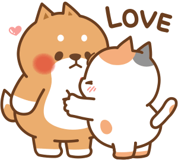
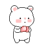
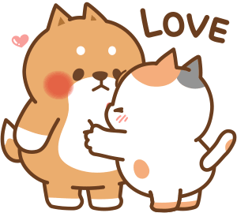
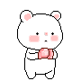

Hi boss thankyou for this almost 6 months of talking to you i hope hindi ka padin nagsasawa na kausapin ako AHAHAHAHAHA. Well technically ako itong hindi sumusuko sayo kahit na alam kong yung chance nalang is maliit mehehehhehe. I hope this month of February will be your month were there no problems for you na iisipin at ako lang ang iyong mamahalin BWAHHAHAHAHAH. I hope you know that i still love you eimy and lalo kitang minamahal kada araw-araw.
Thankyou for not leaving me even though nakakasawa na ako - i mean ako nagsasawa na sa ugali ko HAHAHAHAHA. i hope the all the problems you couldn't say to me is maayos and one day you maging comfortable kana sabihin sakin lahat ng sinasarili mong problema. Thankyou for staying eimy you ikaw ang pinaka maganda kong nakuha ngayon sa buhay ko. i hope you realize just how precious you are not just in mylife but by everyone.